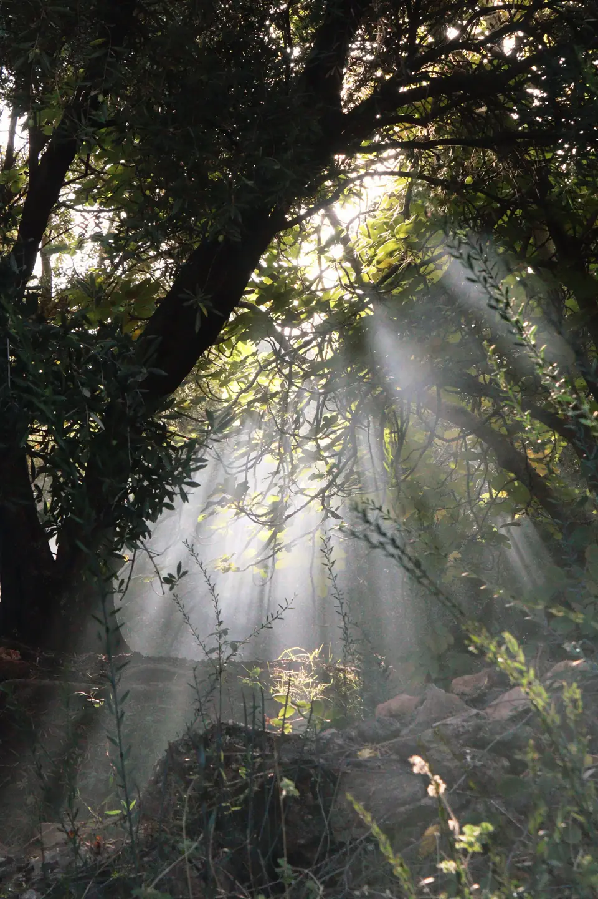

Natuur · Bewustzijn · Verbinding
Terug naar wat echt belangrijk is
In de natuur ontstaat ruimte. Om te vertragen, te voelen en opnieuw verbinding te maken met jezelf.
Ontdek wat bij jou pastWelkom bij Cosmic Spark
Misschien is dit het moment om even stil te staan.
Soms vraagt het leven om een andere beweging. Minder moeten. Meer voelen. Bij Cosmic Spark vind je begeleiding die je helpt om weer dichter bij jezelf te komen.
Leer Kim kennenOntdek jouw weg
Waar verlang jij naar?

Lichaamsgericht werk
Met aandacht voor wat je lichaam vertelt. Alleen voor vrouwen.
Informeer naar mogelijkhedenPersoonlijk & oprecht
Een plek om jezelf te mogen zijn
Ik geloof dat echte verandering begint met aandacht. Niet met een vast stappenplan, maar met ruimte voor jouw verhaal, jouw tempo en jouw mogelijkheden.
Meer over Kim